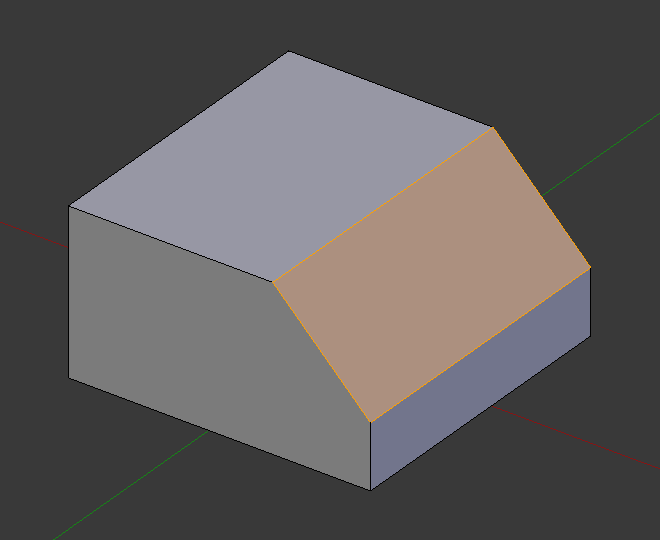

Bevel¶
Reference
| Mode: | Edit Mode |
|---|---|
| Menu: | or |
| Hotkey: | Ctrl-B |
| Menu: | (vertex-only) |
| Hotkey: | Shift-Ctrl-B (vertex-only) |
The Bevel tool allows you to create chamfered or rounded corners to geometry. A bevel is an effect that smooths out edges and corners.
True world edges are very seldom exactly sharp. Not even a knife blade edge can be considered perfectly sharp. Most edges are intentionally beveled for mechanical and practical reasons.
Bevels are also useful for giving realism to non-organic models. In the real world, the blunt edges on objects catch the light and change the shading around the edges. This gives a solid, realistic look, as opposed to un-beveled objects which can look too perfect.

Cubes with and without bevel.
Usage¶
The Bevel tool works only on selected edges with exactly two adjacent faces. It will recognize any edges included in a vertex or face selection as well, and perform the bevel the same as if those edges were explicitly selected. In "vertex only" mode, the Bevel tool works on selected vertices instead of edges. The Bevel tool smooths the edges and/or "corners" (vertices) by replacing them with faces making smooth profiles with a specified number of segments (see the options below for details about the bevel algorithm).
Use Ctrl-B or a method listed above to run the tool. Move the mouse to interactively specify the bevel offset, and scroll the Wheel to increase or decrease the number of segments (see below).

Selected edge before beveling. |

Result of bevel (one segment). |

Result of bevel (vertex only). |
{kind=link}
Ghi chú
Normal (edge) beveling only works on edges that have exactly two faces attached to them. Vertex beveling has no such restriction.
Options¶

- Amount
- You can change the bevel amount by moving the mouse towards and away from the object, a bit like with transform tools. The exact meaning of the value depends on the Amount Type option (see below). As usual, the scaling can be controlled to a finer degree by holding Shift to scale in 0.001 steps. LMB finalizes the operation, RMB or Esc aborts the action.
- Amount Type M
Selects how the Amount value controls the size of the bevel. According to the selection, the amount is:
- Offset
- The distance of a new edge from the original.
- Width
- The width of the bevel face.
- Depth
- The perpendicular distance from the original edge to the bevel face.
- Percent
- The percentage of the length of adjacent edges that the new edges slide.
- Segments S
The number of segments in the bevel can be defined by scrolling the mouse Wheel to increase or decrease this value. The greater the number of segments, the smoother the bevel. Or press S to change the number with mouse movements, as well as numeric input.
Alternatively, you can manually enter a segment number value while using the tool, or in the Mesh Tool options panel after using the tool.

Bevel with four segments.
- Profile P
- This is a number between 0 and 1 that controls the shape of the profile (side view of a beveled edge). The default value, 0.5, gives a circular arc (if the faces meet at right angles). Values less than that give a flatter profile, with 0.25 being exactly flat, and values less than that giving a concave bevel. Values more than 0.5 give a more convex profile. Similarly as Segments it can be set with mouse movements and numeric input after toggling P.
- Vertex Only V
- When selected, the tool is in "vertex only" mode, and only vertices will be beveled.
- Clamp Overlap C
- When selected, the bevel amount is not allowed to go larger than an amount that causes overlapping collisions with other geometry.
- Loop Slide
- If there are unbeveled edges along with beveled edges into a vertex, the bevel tries to slide along those edges when possible. Turning the option off can lead to more even bevel widths.
- Material
- The Material number specifies which material should be assigned to the new faces created by the Bevel tool. With the default, -1, the material is inherited from the closest existing face ("closest" can be a bit ambiguous). Otherwise, the number is the slot index of the material to use for all newly created faces.
Examples¶

Result of beveling multiple edges. |

Another example of beveling multiple edges. |

An example using Profile=0.150. |